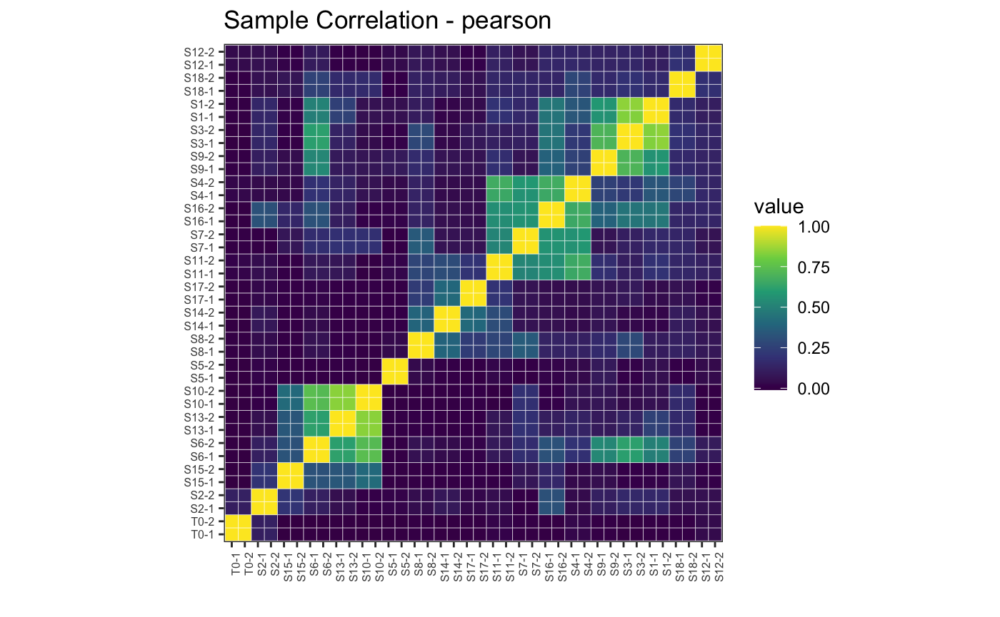
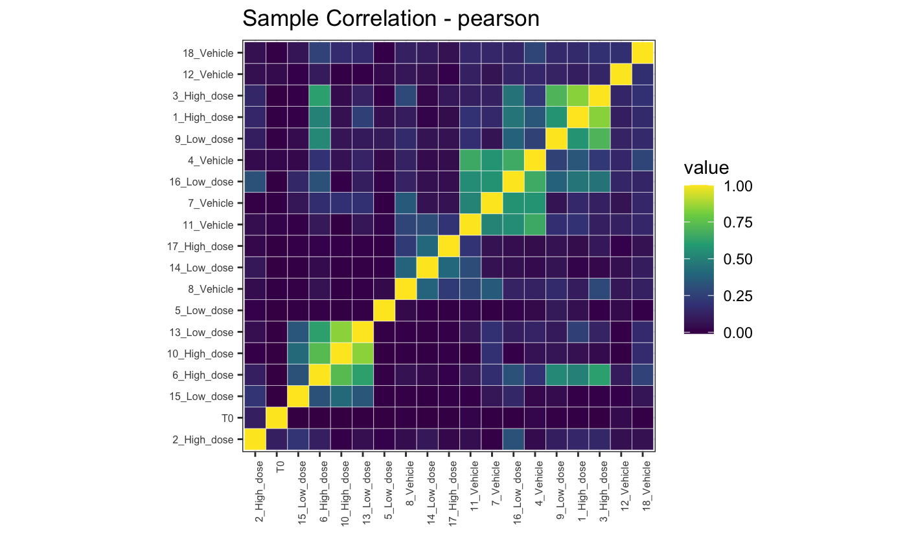
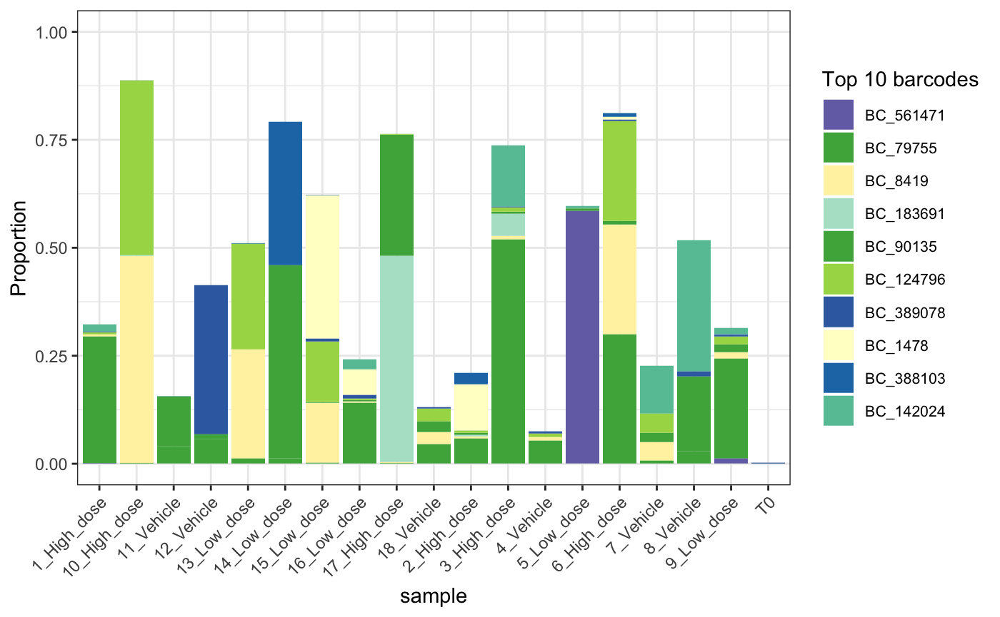
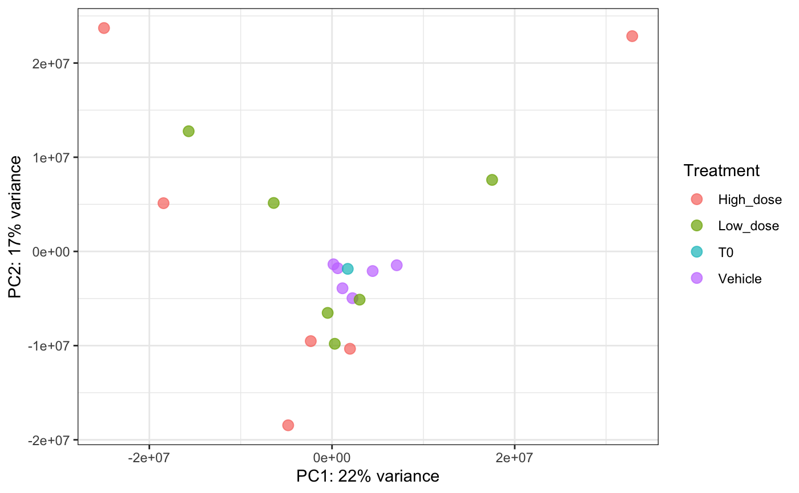
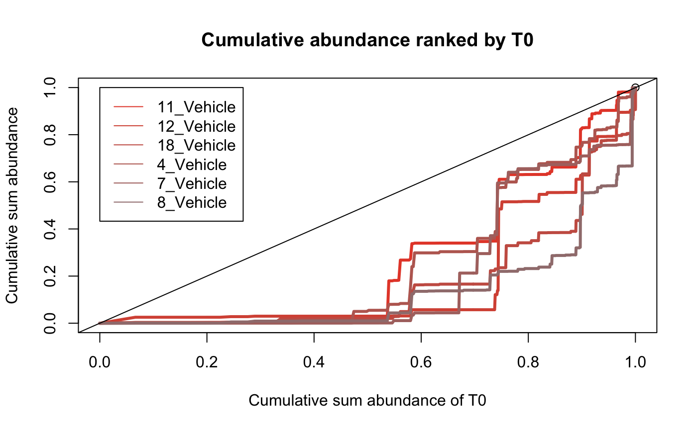
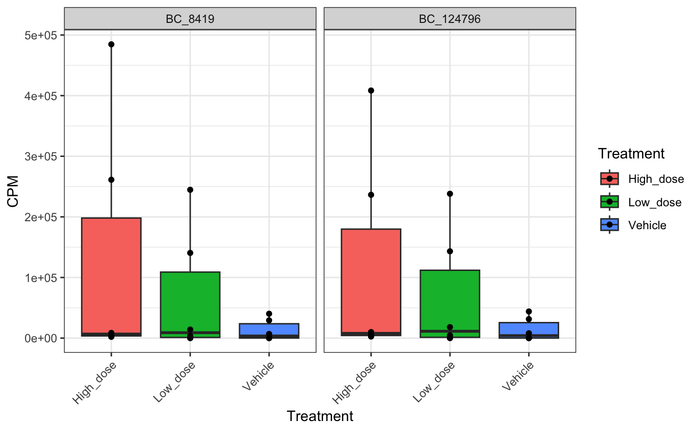
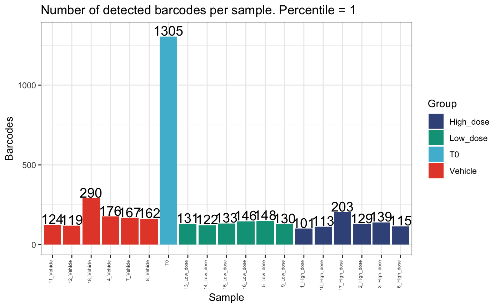
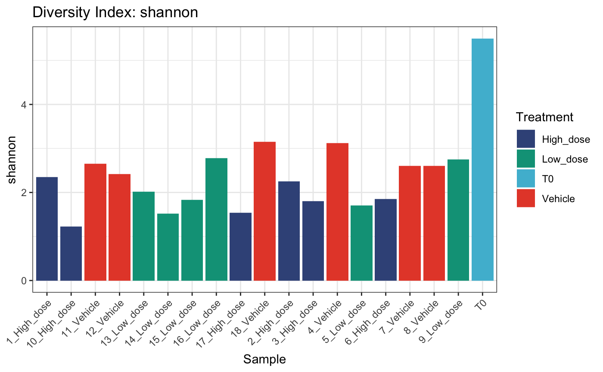

bartools: quickstart guide
Dane Vassiliadis
June 27, 2019
bartools_quickstart.RmdBartools Quickstart Guide
0. Load the bartools package
library(bartools)## Loading required package: edgeR## Loading required package: limma## Loading required package: ggplot2
knitr::opts_chunk$set(dev="png")1. Importing DNA barcode count data
Raw barcode count data can be thought of similarly to raw
integer-based count data from other count based experiments such as
RNA-sequencing. For these data types the edgeR package
provides an efficient DGEList object structure to store
sample counts and associated metadata. bartools makes use
of this object structure to store and process DNA barcode counts.
An example barcoding experiment
For this section we will make use of a hypothetical DNA barcoding dataset based on recent unpublished data from the Dawson lab investigating the response of acute myeloid leukaemia (AML) cells to a novel class of MYST acetyltransferase inhibitor described recently in MacPherson et al. Nature 2019.
AML cells were cultured in vitro, barcoded using a lentiviral based barcoding library called SPLINTR, and transplanted into three groups of C57BL/6J mice with daily dosing of MYST inhibitor at low or high dose or a corresponding vehicle control.
Barcode containing cells were harvested from the bone marrow of diseased mice and sequenced in technical replicate.
To follow along with this vignette the raw counts tables and sample
metadata are included in the bartools package.
data(test.dge)Generating a DGEList object from sample counts and metadata
Counts objects defined above can be specified in a sample metadata
sheet as shown below. This is the easiest way to generate a
DGEList object containing the count information and
metadata of interest for a set of barcode sequencing samples. An example
of this process is shown below.
samplesheet <-
read.csv(
system.file(
"extdata",
"test_sampletable.csv",
package = "bartools",
mustWork = T
),
header = T,
stringsAsFactors = F
)
samplesheetLoad in the counts as specified in the samplesheet into a DGEList object. The function expects file locations to be specified either as character vector of filenames, or as a column named files in the samplesheet.
dge <-
edgeR::readDGE(
files = samplesheet,
group = samplesheet$treatment,
labels = samplesheet$sample,
header = T
)This results in the creation of a DGEList object containing counts and metadata information for each sample.
# Load the test dataset
data(test.dge)
test.dge## An object of class "DGEList"
## $samples
## Sample Experiment Group PCR_Replicate Treatment group
## T0-1 T0-1 test_01 T0 1 T0 T0
## T0-2 T0-2 test_01 T0 2 T0 T0
## S10-1 S10-1 test_01 10_High_dose 1 High_dose 10_High_dose
## S10-2 S10-2 test_01 10_High_dose 2 High_dose 10_High_dose
## S11-1 S11-1 test_01 11_Vehicle 1 Vehicle 11_Vehicle
## lib.size norm.factors
## T0-1 3584606 1
## T0-2 3349340 1
## S10-1 4114186 1
## S10-2 4196458 1
## S11-1 2907500 1
## 33 more rows ...
##
## $counts
## Samples
## Tags T0-1 T0-2 S10-1 S10-2 S11-1 S11-2 S12-1 S12-2 S13-1 S13-2 S14-1 S14-2
## BC_1 175 79 0 0 0 0 0 0 0 0 0 0
## BC_13 1458 834 0 0 0 0 0 0 0 0 0 0
## BC_99 1155 1554 0 0 0 0 0 0 0 0 0 0
## BC_120 285 184 0 0 0 0 0 0 0 0 0 0
## BC_351 0 0 0 0 0 0 0 0 0 0 0 0
## Samples
## Tags S15-1 S15-2 S16-1 S16-2 S17-1 S17-2 S18-1 S18-2 S1-1 S1-2 S2-1 S2-2
## BC_1 0 0 0 0 0 0 0 0 0 0 0 0
## BC_13 0 0 0 0 0 0 0 0 0 0 0 0
## BC_99 0 0 0 0 0 0 0 0 105 205 0 0
## BC_120 0 0 0 0 0 0 0 0 0 0 0 0
## BC_351 0 0 0 0 0 0 0 0 0 0 0 0
## Samples
## Tags S3-1 S3-2 S4-1 S4-2 S5-1 S5-2 S6-1 S6-2 S7-1 S7-2 S8-1 S8-2 S9-1 S9-2
## BC_1 0 0 0 0 0 0 0 0 0 0 0 0 0 0
## BC_13 0 0 0 0 0 0 0 0 0 0 0 0 0 0
## BC_99 0 0 0 0 0 0 0 0 0 0 0 0 0 0
## BC_120 0 0 0 0 0 0 0 0 0 0 0 0 0 0
## BC_351 0 0 0 0 0 0 0 0 0 0 0 0 0 0
## 1634 more rows ...2. Data QC and Normalisation
Data QC
We first want to ensure that we are working with clean data. Using
the thresholdCounts() function we can determine an
appropriate threshold to apply to the data to maximise signal to noise
and retain true and informative barcodes.
We can test different thresholding parameters, such as absolute thresholds on total read counts as below.
# Remove rows with no data
thresholdCounts(test.dge, type = "absolute", threshold = 1, min.samps = 1,
plot = T, group = "Treatment")## DGEList dimensions pre-threshold## [1] 1639 38## DGEList dimensions post-threshold## [1] 1490 38
thresholdCounts(test.dge, type = "absolute", threshold = 10, min.samps = 1,
plot = T, group = "Treatment")## DGEList dimensions pre-threshold## [1] 1639 38## DGEList dimensions post-threshold## [1] 1462 38
thresholdCounts(test.dge, type = "absolute", threshold = 10, min.samps = 3,
plot = T, group = "Treatment")## DGEList dimensions pre-threshold## [1] 1639 38## DGEList dimensions post-threshold## [1] 387 38
Or relative thresholds based on proportion within a sample.
# Remove rows with no data
thresholdCounts(test.dge, type = "relative", threshold = 1e-10, min.samps = 1,
plot = T, group = "Treatment")## DGEList dimensions pre-threshold## [1] 1639 38## DGEList dimensions post-threshold## [1] 1490 38
thresholdCounts(test.dge, type = "relative", threshold = 1e-5, min.samps = 1,
plot = T, group = "Treatment")## DGEList dimensions pre-threshold## [1] 1639 38## DGEList dimensions post-threshold## [1] 1381 38
thresholdCounts(test.dge, type = "relative", threshold = 1e-5, min.samps = 3,
plot = T, group = "Treatment")## DGEList dimensions pre-threshold## [1] 1639 38## DGEList dimensions post-threshold## [1] 322 38
Here we will continue with an absolute threshold of 2.
dge.filtered <- thresholdCounts(test.dge, type = "absolute", threshold = 10,
min.samps = 2, plot = F)## DGEList dimensions pre-threshold## [1] 1639 38## DGEList dimensions post-threshold## [1] 1316 38We then normalise samples to sequencing depth to counts per million
using normaliseCounts().
dge.cpmnorm <- normaliseCounts(dge.filtered, method = "CPM")We can plot the raw and normalised sequencing depth to get an idea of depth discrepancies between PCR replicates.
# raw counts per sample
plotReadCounts(dge.filtered$counts, group = dge.filtered$samples$Treatment)
# normalised counts per sample
plotReadCounts(dge.cpmnorm, group = dge.filtered$samples$Treatment)
For lentiviral based barcoding experiments, such as this one, it is
common for the library to exhibit a degree of skewness based on the
cloning method. This means that some barcodes are represented in the
library more than others and so have a greater chance to be transduced
into multiple cells.
Most experiments assume that each individual barcode is transduced into only one cell, and that each cell is only transduced with one barcode. This is ensured using a low multiplicity of infection (MOI) transduction in which the likelihood that a cell is transduced with one or more barcode containing virions follows a Poisson distribution.
With this in mind, it also can be useful to check the total counts
per barcode to identify bias in counts in sample vs. frequency of
barcode in reference library.
The barcodes are labelled based on their ranked frequency in the
reference library.
# plot detected barcodes ordered by frequency in reference library
plotBarcodeCounts(dge.cpmnorm, log10 = F)
# plot log10 barcode counts
plotBarcodeCounts(dge.cpmnorm, log10 = T)
# order barcodes by count across samples
plotBarcodeCounts(dge.cpmnorm, log10 = T, order = T)In the first and second plot individual barcodes on the x-axis are
ordered based on their frequency in the reference library pool.
An increased number of counts per barcode toward the left hand side of
the plot would be suggestive of transduction bias, meaning that there
are more reads on average attributed to the more abundant barcodes in
the library. And so, likely multiple cells were transduced with the same
barcode.
We don’t see this here suggesting that this is not a problem for this
experiment.
Check correlation between PCR replicates
It is also important to ensure that individual samples are sequenced to an appropriate depth as this ensures that the entire barcode repertoire present in a sample is captured in the data. Sequencing technical duplicates of a sample generated at the library PCR stage is a good way to ensure this.
In our experiment we have 9 samples total, each with two PCR technical replicates. Here, we correlate the barcode distributions for each pair of technical replicates.
samps <- unique(dge.filtered$samples$group)
# only plot subset of samples
lapply(samps[4:6], function(x) {
df <- dge.filtered[, dge.filtered$samples$group %in% as.character(x)]
plotBarcodeRegression(
df,
samp1 = colnames(df)[[1]],
samp2 = colnames(df)[[2]],
rug = T,
trans = "log1p"
)
})## [[1]]##
## [[2]]##
## [[3]]We fit a linear model to both technical replicates per sample and plot the regression line. Note that we expect a very high correlation because these are PCR replicates of the same barcode pool.
We can also easily get the correlation values between replicates
using calcReplicateCorr.
Samples can be filtered for high or low correlation using the
corr.thresh and return variables.
corrs <- calcReplicateCorr(dge.filtered, group = "Group")
which(corrs < 0.9)## named integer(0)Finally sample replicates can be correlated globally using
plotBarcodeCorrelation
# Pearson correlation
plotBarcodeCorrelation(dge.filtered$counts, clustered = T, upper = T, method = "pearson")
# Spearman correlation
plotBarcodeCorrelation(dge.filtered$counts, clustered = T, upper = T, method = "spearman")
Collapse PCR replicates in object
Now that we know our samples are of good quality we have no further use of the PCR replicate information. From this point onward its a good idea to collapse our PCR replicates.
dim(dge.filtered)## [1] 1316 38collapseReplicates can take the average (default
behavior) or the sum of PCR technical replicates within each sample.
Here we take the average. Users may want to sum PCR replicates if there
is evidence of sampling bias across technical repeats (i.e. poor
correlation score or other evidence).
dge.filtered.collapsed <- collapseReplicates(
dge.filtered,
groupby = dge.filtered$samples$group,
by = "mean",
show_reps = F
)The result is a clean barcode sequencing dataset ready for further investigation and visualisation.
head(dge.filtered.collapsed)## An object of class "DGEList"
## $samples
## Sample Experiment Group PCR_Replicate Treatment
## 1_High_dose S1-1 test_01 1_High_dose 1 High_dose
## 10_High_dose S10-1 test_01 10_High_dose 1 High_dose
## 11_Vehicle S11-1 test_01 11_Vehicle 1 Vehicle
## 12_Vehicle S12-1 test_01 12_Vehicle 1 Vehicle
## 13_Low_dose S13-1 test_01 13_Low_dose 1 Low_dose
## group lib.size norm.factors Sample BC.count
## 1_High_dose 1_High_dose 3447629 1 S1-1 66
## 10_High_dose 10_High_dose 4114186 1 S10-1 78
## 11_Vehicle 11_Vehicle 2907500 1 S11-1 88
## 12_Vehicle 12_Vehicle 4202337 1 S12-1 70
## 13_Low_dose 13_Low_dose 4513559 1 S13-1 93
## 14 more rows ...
##
## $counts
## Samples
## Tags 1_High_dose 10_High_dose 11_Vehicle 12_Vehicle 13_Low_dose 14_Low_dose
## BC_1 0 0 0 0 0 0
## BC_13 0 0 0 0 0 0
## BC_99 155 0 0 0 0 0
## BC_120 0 0 0 0 0 0
## BC_426 0 0 0 0 0 0
## BC_430 0 0 0 0 0 0
## Samples
## Tags 15_Low_dose 16_Low_dose 17_High_dose 18_Vehicle 2_High_dose
## BC_1 0 0 0 0 0
## BC_13 0 0 0 0 0
## BC_99 0 0 0 0 0
## BC_120 0 0 0 0 0
## BC_426 0 0 0 0 0
## BC_430 0 0 0 413 0
## Samples
## Tags 3_High_dose 4_Vehicle 5_Low_dose 6_High_dose 7_Vehicle 8_Vehicle
## BC_1 0 0 0 0 0 0
## BC_13 0 0 0 0 0 0
## BC_99 0 0 0 0 0 0
## BC_120 0 0 0 0 0 0
## BC_426 0 0 0 0 0 0
## BC_430 0 13 0 0 0 0
## Samples
## Tags 9_Low_dose T0
## BC_1 0 127
## BC_13 0 1146
## BC_99 0 1354
## BC_120 0 234
## BC_426 0 81
## BC_430 0 10223. Visualisation
bartools includes a range of visualisation options for
examining barcode-seq datasets.
Bubble plot
Sometimes a visual depiction of the data is most suitable. Here, barcodes/tags are represented by bubbles aligned on a single plane. The size of the bubbles reflects the percentage abundance of each barcode within a sample.
plotBarcodeBubble(counts = dge.filtered.collapsed$counts,
proportionCutoff = 10,
labelBarcodes = T)## Warning: Vectorized input to `element_text()` is not officially supported.
## ℹ Results may be unexpected or may change in future versions of ggplot2.
Using the orderSample parameter, bubbleplots can also be
arranged according to frequency in a particular sample which can help
with visual comparison of large vs small clones across samples and
conditions.
plotOrderedBubble(counts = dge.filtered.collapsed$counts,
proportionCutoff = 10,
labelBarcodes = T,
orderSample = "T0",
colorDominant = F,
samples = dge.filtered.collapsed$samples,
group = "Treatment")## Warning: Vectorized input to `element_text()` is not officially supported.
## ℹ Results may be unexpected or may change in future versions of ggplot2.## Warning: Transformation introduced infinite values in continuous x-axis
Barcodes that fail to meet a defined abundance threshold in any sample can be greyed out.
plotOrderedBubble(counts = dge.filtered.collapsed$counts,
proportionCutoff = 10,
labelBarcodes = T,
orderSample = "T0",
colorDominant = T,
samples = dge.filtered.collapsed$samples,
group = "Treatment")## Warning: Vectorized input to `element_text()` is not officially supported.
## ℹ Results may be unexpected or may change in future versions of ggplot2.## Warning: Transformation introduced infinite values in continuous x-axisOr filtered from the plot entirely using the
filterCutoff parameter
plotOrderedBubble(counts = dge.filtered.collapsed$counts,
proportionCutoff = 10,
labelBarcodes = T,
orderSample = "T0",
colorDominant = T,
filterCutoff = 0.01,
samples = dge.filtered.collapsed$samples,
group = "Treatment")## Warning: Vectorized input to `element_text()` is not officially supported.
## ℹ Results may be unexpected or may change in future versions of ggplot2.Barcode Plot
Alternatively, we can focus in on the most abundant barcodes within a set of samples to more easily observe how these change in frequency over the course of an experiment.
plotBarcodeHistogram(counts.obj = dge.filtered.collapsed$counts,
sample = dge.filtered.collapsed$samples$group[[10]],
top = 50)Timeseries Plots
For timecourse experiments it is useful to visualise how the kinetics
of barcode diversity changes over time. In this instance we can use
plotBarcodeTimeseries to get an idea of the relative
abundance of the top n barcodes in a sample relative to
others.
plotBarcodeTimeseries(counts.obj = dge.filtered.collapsed, top = 5)## Using barcode as id variablesPrincipal Components Analysis
A global level PCA analysis is a good way to get a high level understanding of the similarities and differences between samples.
subset <- dge.filtered.collapsed[, dge.filtered.collapsed$samples$Treatment %in% c("T0", "Vehicle", "High_dose")]
plotBarcodePCA(object = subset, intgroup = "Treatment")
Heatmaps
Another method of comparing abundance across samples is using a heatmap. Here barcodes ranked among the top n most abundant within each sample are indicated by an asterisk. This heatmap shows high dose samples are generally distinct from the low dose and vehicle group.
plotBarcodeHeatmap(
counts = cpm(dge.filtered.collapsed$counts),
N = 5,
show_bc = T,
samples = dge.filtered.collapsed$samples,
group = "Treatment"
)4. Analysing Composition and Diversity
Its important to not only be able to visualise the data but also understand relationships between barcodes/tags at the data level.
Identify compositional bias within samples
The above plots give a global visualisation of the abundance of each barcode within a sample however the compositional makeup can be obscured by visualising the data in this way. it can be helpful to examine the fraction of barcodes that comprise a sample. These plots calculate the cumulative sum of a sample in relation to other samples defined by the user.
plotBarcodeCumSum(dge.filtered.collapsed$counts, sample1 = "T0",
samples = colnames(dge.filtered.collapsed$counts)[1:5])
Identifying abundant barcodes within samples
It is important to be able to determine which barcodes are most
abundant within each sample. bartools allows this to be
easily calculated according to an abundance threshold.
top.bc <- getDominantBarcodes(dge.filtered.collapsed, pct.thresh = 5)
top.bc[1:5]## $`1_High_dose`
## [1] "BC_79755" "BC_102160" "BC_59493" "BC_23361" "BC_53234" "BC_400391"
##
## $`10_High_dose`
## [1] "BC_8419" "BC_124796"
##
## $`11_Vehicle`
## [1] "BC_53234" "BC_205581" "BC_90135" "BC_172626" "BC_58978"
##
## $`12_Vehicle`
## [1] "BC_389078" "BC_159570" "BC_135438" "BC_500780" "BC_79755"
##
## $`13_Low_dose`
## [1] "BC_8419" "BC_124796" "BC_102160" "BC_257382"We can then use specific plots to visualise the dominance of specific barcodes within and across samples.
plotBarcodeBoxplot(dge.filtered.collapsed,
group = "Treatment",
barcodes = top.bc$`10_High_dose`,
conditions = c("Low_dose", "High_dose", "Vehicle"),
point = T)## Multiple barcodes given. Metadata group = Treatment
Calculating and plotting percentile abundance.
The above graphs demonstrate that relatively few barcodes can sometimes comprise the majority of a sample’s clonality, particularly following a selective event such as drug treatment. It is useful to formally analyse this based on a desired percentile threshold. A common threshold is the 95th percentile. This can eliminate small barcodes that comprise the tail of the dataset and give a sense of how many clones truly comprise each sample
top_barcodes <- calcPercentileBarcodes(dge.filtered.collapsed, percentile = 0.95)
top_barcodes$NumBarcodes## Sample NumBarcodes
## 1 1_High_dose 15
## 2 10_High_dose 3
## 3 11_Vehicle 19
## 4 12_Vehicle 14
## 5 13_Low_dose 11
## 6 14_Low_dose 6
## 7 15_Low_dose 7
## 8 16_Low_dose 19
## 9 17_High_dose 5
## 10 18_Vehicle 27
## 11 2_High_dose 12
## 12 3_High_dose 10
## 13 4_Vehicle 25
## 14 5_Low_dose 11
## 15 6_High_dose 9
## 16 7_Vehicle 16
## 17 8_Vehicle 21
## 18 9_Low_dose 19
## 19 T0 591
top_barcodes$TopBarcodeCounts$`6_High_dose`## 6_High_dose
## BC_79755 1313507
## BC_8419 1120457
## BC_124796 1013931
## BC_4564 461928
## BC_400391 93601
## BC_31610 43251
## BC_1478 33933
## BC_90135 32480
## BC_388103 29467
top_barcodes$TopBarcodes$`6_High_dose`## [1] "BC_79755" "BC_8419" "BC_124796" "BC_4564" "BC_400391" "BC_31610"
## [7] "BC_1478" "BC_90135" "BC_388103"We can compare the number of detected barcodes in the top 95th percentile per sample and the total sample.
plotDetectedBarcodes(
dge.filtered.collapsed,
percentile = 1,
plot = T,
group = "Treatment",
)
plotDetectedBarcodes(
dge.filtered.collapsed,
percentile = 0.95,
plot = T,
group = "Treatment"
)
These plots show that there are few clones that comprise the majority of the dataset per mouse. Also, there are generally fewer clones present in the high dose group compared to the vehicle or low dose groups.
Diversity analysis
We can examine diversity in a few different ways. The most common are Shannon, Simpson, Inverse Simpson and Gini. Each will be applicable in different circumstances, however the Shannon diversity index is more widely used to compare global diversity amongst populations of barcoded cells.
calcDivIndexes can be used to determine various
diversity indices per sample
diversity <- calcDivIndexes(dge.filtered.collapsed$counts, group = dge.filtered.collapsed$samples$Treatment)## Joining with `by = join_by(name)`
diversity## name shannon simpson invsimpson gini group
## 1 1_High_dose 2.348595 0.8444003 6.426747 0.9937724 High_dose
## 2 10_High_dose 1.225780 0.6032511 2.520486 0.9976429 High_dose
## 3 11_Vehicle 2.651924 0.8814260 8.433552 0.9914723 Vehicle
## 4 12_Vehicle 2.413992 0.8399937 6.249754 0.9930458 Vehicle
## 5 13_Low_dose 2.018919 0.8131627 5.352250 0.9952925 Low_dose
## 6 14_Low_dose 1.519874 0.6814167 3.138896 0.9972048 Low_dose
## 7 15_Low_dose 1.832136 0.7746698 4.437931 0.9961414 Low_dose
## 8 16_Low_dose 2.778791 0.9048391 10.508519 0.9907846 Low_dose
## 9 17_High_dose 1.534413 0.6789847 3.115116 0.9971361 High_dose
## 10 18_Vehicle 3.153584 0.9327016 14.859192 0.9864106 Vehicle
## 11 2_High_dose 2.256204 0.8510406 6.713237 0.9943148 High_dose
## 12 3_High_dose 1.798214 0.6916665 3.243242 0.9959574 High_dose
## 13 4_Vehicle 3.122376 0.9318058 14.664008 0.9868933 Vehicle
## 14 5_Low_dose 1.704952 0.6350916 2.740414 0.9959314 Low_dose
## 15 6_High_dose 1.855001 0.7799122 4.543641 0.9958115 High_dose
## 16 7_Vehicle 2.605078 0.8891045 9.017500 0.9922698 Vehicle
## 17 8_Vehicle 2.599751 0.8583785 7.061077 0.9915073 Vehicle
## 18 9_Low_dose 2.747539 0.8980367 9.807451 0.9909340 Low_dose
## 19 T0 5.496351 0.9850705 66.981563 0.7980364 T0These diversity calculations can then be fed to
plotDivIndexes for visualisation
plotDivIndexes(div = diversity,
metric = "shannon",
group = dge.filtered.collapsed$samples$Treatment,
type = "point")
Comparing abundance
We can also statistically test for barcodes / tags that are over /
underrepresented in a group of samples relative to another using the
internal edgeR framework. bartools contains a convenience
wrapper for this functionality
compareAbundance(dge.obj = dge.filtered.collapsed,
meta = "Treatment",
condition1 = "Low_dose",
condition2 = "High_dose",
pval.cutoff = 0.001,
logFC.cutoff = 5)
Finally, we can visualise some of these differentially abundant barcodes using lineplots between conditions.
plotAbundanceLines(
dge.filtered.collapsed,
condition = dge.filtered.collapsed$samples$Treatment,
condition_names = c("Vehicle", "High_dose"),
plot_type = 'counts'
)
5. Session Info
## R version 4.2.2 (2022-10-31)
## Platform: aarch64-apple-darwin20 (64-bit)
## Running under: macOS Ventura 13.1
##
## Matrix products: default
## BLAS: /Library/Frameworks/R.framework/Versions/4.2-arm64/Resources/lib/libRblas.0.dylib
## LAPACK: /Library/Frameworks/R.framework/Versions/4.2-arm64/Resources/lib/libRlapack.dylib
##
## locale:
## [1] en_US.UTF-8/en_US.UTF-8/en_US.UTF-8/C/en_US.UTF-8/en_US.UTF-8
##
## attached base packages:
## [1] stats graphics grDevices utils datasets methods base
##
## other attached packages:
## [1] bartools_0.2.5 ggplot2_3.4.4 edgeR_3.40.2 limma_3.54.2
##
## loaded via a namespace (and not attached):
## [1] nlme_3.1-163 matrixStats_1.0.0 fs_1.6.3
## [4] RColorBrewer_1.1-3 doParallel_1.0.17 rprojroot_2.0.3
## [7] ggsci_3.0.0 tools_4.2.2 backports_1.4.1
## [10] bslib_0.5.1 utf8_1.2.4 R6_2.5.1
## [13] vegan_2.6-4 BiocGenerics_0.44.0 mgcv_1.9-0
## [16] colorspace_2.1-0 permute_0.9-7 GetoptLong_1.0.5
## [19] withr_2.5.2 tidyselect_1.2.0 compiler_4.2.2
## [22] textshaping_0.3.6 cli_3.6.1 Cairo_1.6-1
## [25] desc_1.4.2 labeling_0.4.3 sass_0.4.7
## [28] scales_1.2.1 pkgdown_2.0.7 systemfonts_1.0.5
## [31] stringr_1.5.0 digest_0.6.33 rmarkdown_2.25
## [34] pkgconfig_2.0.3 htmltools_0.5.6.1 fastmap_1.1.1
## [37] rlang_1.1.1 GlobalOptions_0.1.2 rstudioapi_0.15.0
## [40] shape_1.4.6 jquerylib_0.1.4 farver_2.1.1
## [43] generics_0.1.3 jsonlite_1.8.7 dplyr_1.1.3
## [46] car_3.1-2 magrittr_2.0.3 Matrix_1.6-1.1
## [49] S4Vectors_0.36.2 Rcpp_1.0.11 munsell_0.5.0
## [52] fansi_1.0.5 abind_1.4-5 lifecycle_1.0.3
## [55] stringi_1.7.12 yaml_2.3.7 carData_3.0-5
## [58] MASS_7.3-60 plyr_1.8.9 grid_4.2.2
## [61] parallel_4.2.2 forcats_1.0.0 crayon_1.5.2
## [64] lattice_0.21-9 splines_4.2.2 circlize_0.4.15
## [67] magick_2.8.0 locfit_1.5-9.8 knitr_1.44
## [70] ComplexHeatmap_2.14.0 pillar_1.9.0 ggpubr_0.6.0
## [73] rjson_0.2.21 ggsignif_0.6.4 stats4_4.2.2
## [76] reshape2_1.4.4 codetools_0.2-19 glue_1.6.2
## [79] evaluate_0.23 vctrs_0.6.4 png_0.1-8
## [82] foreach_1.5.2 gtable_0.3.4 purrr_1.0.2
## [85] tidyr_1.3.0 clue_0.3-65 cachem_1.0.8
## [88] xfun_0.40 broom_1.0.5 rstatix_0.7.2
## [91] ragg_1.2.5 viridisLite_0.4.2 tibble_3.2.1
## [94] iterators_1.0.14 ineq_0.2-13 memoise_2.0.1
## [97] IRanges_2.32.0 cluster_2.1.4